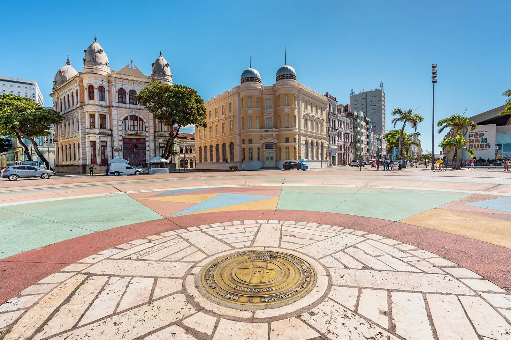
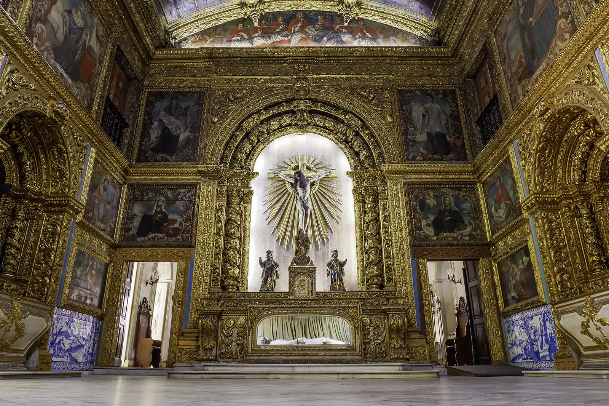
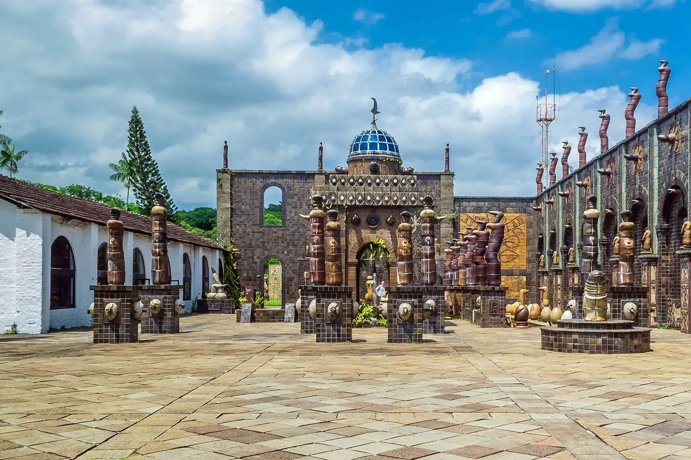
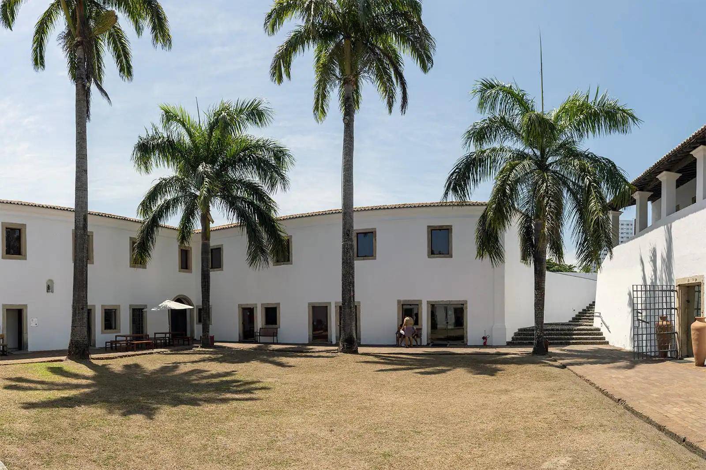
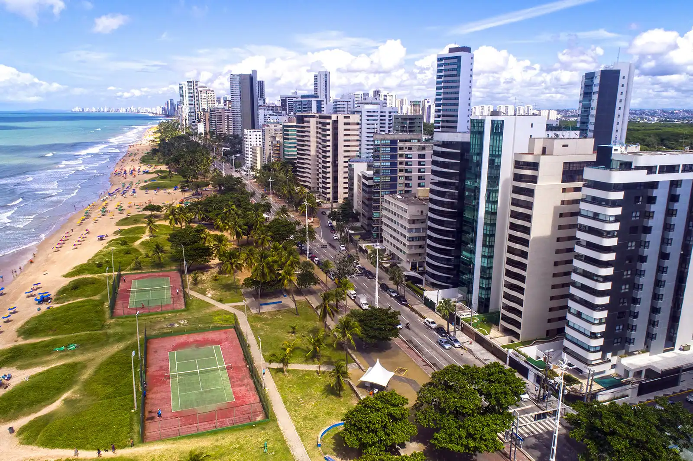

Sobre a cidade:

Recife é a capital do estado de Pernambuco, no nordeste do Brasil, e é o centro deuma área que inclui várias cidades industriais. É um porto atlântico localizado na confluência dos rios Capibaribe e Beberibe. Recife é conhecida como a Veneza do Brasil porque a cidade é cortada por canais e suas partes são ligadas por várias pontes1. A cidade foi fundada em 1537, durante a colonização portuguesa do Brasil, como o principal porto da Capitania de Pernambuco, conhecida por sua grande produção de cana-de-açúcar2. É a quarta maior área urbana do Brasil com 4.054.866 habitantes e a maior área urbana das regiões Norte/Nordeste2. É uma cidade rica em história e cultura, com muitos museus e instituições de ensino superior. Recife é um importante centro comercial e industrial, com produtos derivados da cana-de-açúcar (açúcar e etanol), veículos motorizados, navios, plataformas de petróleo, eletrônicos, software e outros2. É uma cidade vibrante e emocionante para se visitar!
A Terra do Frevo é um dos destaques do Nordeste brasileiro em termos de cultura, história e desenvolvimento urbano. São muitos os pontos turísticos nessa cidade, que preserva o seu legado colonial, marcado pela influência holandesa, e que é também um destino alegre. Quanto à culinária de Recife, vale a pena se deliciar com o famoso bolo de rolo, uma espécie de rocambole com massa mais fininha. Os frutos do mar também têm espaço mais do que reservado na gastronomia local. Já na parte cultural, além ser a terra de Nelson Rodrigues, Recife também é muito interessante, com ritmos que incluem o frevo e o maracatu. Recife é uma cidade linda com muitas praias incríveis para visitar. Algumas das praias mais populares incluem a Praia de Boa Viagem, que é uma área sofisticada à beira-mar, com edifícios altos, hotéis e ótimos restaurantes, e tem uma excelente praia e uma vida noturna animada1. Outras praias notáveis incluem a Praia de Itamaracá, a Praia do Pina e a Praia de Candeias2. Ao norte de Recife, praias notáveis incluem as de Catuama, Itamaracá, Janga, Pau Amarelo e Maria Farinha, onde você encontrará o enorme e emocionante Parque Aquático Veneza (Parque Aquático)3. As praias de Recife são conhecidas por suas águas quentes e areias douradas. No entanto, é importante estar ciente dos tubarões e águas-vivas e tomar precauções ao nadar1. Além disso, há muitas atividades ao ar livre para desfrutar nas praias de Recife, como passeios de barco, caminhadas e acampamentos, passeios pela natureza e vida selvagem2.

Pontos turistico de Recife:
-
Marco Zero
Menu
O Marco Zero foi onde a cidade literalmente começou. Localizado na Praça Rio Branco, é lá que se encontra o ponto inicial para a contagem das distâncias da cidade. Dali, além de prédios históricos e da movimentação cotidiana da capital, turistas e moradores podem aproveitar toda a infraestrutura da região, com bares, restaurantes, museus e centro culturais. De segunda a segunda, há sempre gente movimentando o local em qualquer hora do dia e da noite. Um passeio completo e muito diversificado
-
Capela Dourada
Menu
Uma das igrejas mais bonitas da capital, a Capela Dourada guarda muito da ostentação e da riqueza do Brasil colonial, com muitos detalhes em ouro, madeiras trabalhadas e pinturas sacras. Na verdade, a capela fica dentro do Convento e da Igreja de Santo Antônio, onde também está o Museu de Arte Sacra. Perto dali, não deixe de conhecer o Convento de São Francisco, que compõe um belo conjunto arquitetônico com a Igreja de Nossa Senhora das Neves, a Capela de Santana e a Capela de São Roque.
-
Oficina de Cerâmica Francisco Brennand
Menu
Um passeio altamente recomendado é uma visita até a Oficina de Cerâmica Francisco Brennand, que pertence ao próprio artista. O local foi transformado por ele em um museu a céu aberto, tem espaços para a exposição de suas obras e é a oficina de produção de uma das melhores cerâmicas do país. Ainda com a chancela da família Brennand, o Instituto Ricardo Brennand é outra excelente alternativa para visitantes de todas as idades que apreciam arte, arquitetura e história. O acervo inclui exposições permanentes e temporárias de artistas nacionais e internacionais e um arsenal de armas, armaduras, tapetes e quadros da era medieval.
-
Forte das Cinco Pontas
Menu
O Forte das Cinco Pontas representa a última construção dos holandeses na cidade, com o objetivo de protegê-la de possíveis ataques e também para auxiliar na rede de distribuição de água. É um misto de cultura e história em um único roteiro. No lugar, ainda funciona o Museu da Cidade, com exposições temporárias que abordam a história da capital pernambucana. Além disso, é muito comum anunciarem programações temporárias com eventos e exposições aleatórias. Logo, uma dica antes de visitar: busque informações atualizadas no site oficial do museu.
-
Praia de Boa Viagem
Menu
A Praia de Boa Viagem é a mais famosa da cidade, sempre muito movimentada e frequentada por locais e turistas. O lugar oferece uma boa infraestrutura e conta com uma extensa faixa de areia, bem convidativa para a prática de esportes. Por ter arrecifes, o mar aqui costuma ser calmo e com poucas ondas. Uma continuação da Praia de Boa Viagem, a Praia do Pina também é bastante frequentada por locais. Com águas mornas, verdes e muitos coqueiros ao redor, Pina é interessante para fugir do burburinho de Boa Viagem.